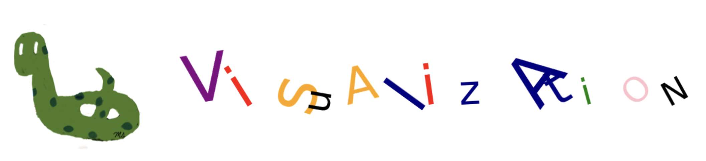

App: Visualization#

Matplotlib#
Matplotlib, a Python library, supports the creation of various types of visualizations in Python. It is commonly imported as:
import matplotlib.pyplot as plt
Scatterplot#
A scatter plot shows points on a graph using dots. Each dot represents a point’s location, given by its x and y coordinates.
These coordinates are like labels for the variables being compared.
For example, if we’re comparing a mouse’s weight and height, weight would go on the x-axis and height on the y-axis.
To create a scatetter plot:
Use plt.scatterplot()
(x_coordinate, y-coordinate) should be given for a single point
(x_coordinate sequence, y-coordinate sequence) should be given for multiple points
sequence can be a tuple, list, series
Using a semicolon prevents the return value from being printed.
In plotting, using a semicolon stops the resulting plot object from being printed.
For more information on plt.scatterplot() and its parameters, visit the following link.
# single point
plt.scatter(5,10); # x=5, y=10
In the following code the points are: \((2,10), (4,3), (5,6)\).
# multiple points
plt.scatter((2,4,5),(10,3,6));
Color#
The c or color parameter is used to change the colors of the markers.
‘r’ can be used to represent ‘red’
‘g’ can be used to represent ‘green’
‘k’ can be used to represent ‘black’
plt.scatter((2,4,5),(10,3,6), c='red');
plt.scatter((2,4,5),(10,3,6), color='r');
A tuple of colors can be provided to assign each marker a different color.
plt.scatter((2,4,5),(10,3,6), color=('navy','k','r'));
Size#
The s parameter is used to change the size of the markers.
plt.scatter((2,4,5),(10,3,6), s=300);
plt.scatter((2,4,5),(10,3,6), s=300, c='r');

A tuple of sizes can be provided to assign each marker a different size.
plt.scatter((2,4,5),(10,3,6), s=(10, 100, 1000));
Marker#
The marker parameter is used to change the style of the markers. For more marker styles visit the following link.
plt.scatter((2,4,5),(10,3,6), marker='+');
# H: hexagon
plt.scatter((2,4,5),(10,3,6), marker='H', s=200);
Transparancy#
The alpha parameter, ranging from 0 (transparent) to 1 (opaque), is used to adjust the transparency of the markers.
# H: hexagon
plt.scatter((2,4,5),(10,3,6), alpha=0.2, s=200);
plt.scatter((2,4,5),(10,3,6), alpha=(0.1, 0.4, 0.8), s=200);
Chart Elements#
Title#
plt.title() is used to include a title in a figure.
plt.title('Three Red Points')
plt.scatter((2,4,5),(10,3,6), c='r');
The parameters fontsize, c, family, and loc are used to adjust the properties of the title.
c: color
loc: location (‘center’, ‘left’, ‘right’)
family: font
plt.title('Three Red Points', fontsize=30, c='navy', family='fantasy', loc='left')
plt.scatter((2,4,5),(10,3,6), c='r');
Axis Labels#
plt.xlabel() and plt.ylabel() are used to add axis labels to the figure.
plt.xlabel('Weight')
plt.ylabel('Height')
plt.scatter((2,4,5),(10,3,6), c='red');
Axis Ticks#
The tick locations and labels can be modified using plt.xticks() and plt.yticks().
plt.scatter([2,4,5],[10,3,6])
plt.xticks([2,4,5], ['Washington', 'Alabama','Virginia']);
# rotation
plt.scatter([2,4,5],[10,3,6])
plt.xticks([2,4,5], ['Washington', 'Alabama','Virginia'], rotation=90);
Remove Axis#
plt.axis(‘off’) is used to remove axis.
plt.scatter((2,3,4,5,6),(1,2,5,2,3), c='red', s=100)
plt.axis('off');
Grids#
plt.grid() is used to add horizontal and vertical gridlines to the plot.
axis parameter is used to achoose the gridline types.
Only vertical gridlines: axis = ‘x’.
Only horizontal gridlines: axis = ‘y’.
plt.scatter([2,4,5],[10,3,6])
plt.grid()
plt.scatter([2,4,5],[10,3,6])
plt.grid(axis='x')
plt.scatter([2,4,5],[10,3,6])
plt.grid(axis='y')
Text#
plt.text() is used to insert a text into a figure.
It is used in the form of plt.text(x, y, text).
(x, y) denotes the starting point of the text.
plt.scatter([2,4,5],[10,3,6])
plt.text(4.05,3,'Alabama'); # starts from the point (4.05,3)
Subplot#
plt.subplot() is used to create multiple plots within a single figure. Before the code for each subplot, plt.subplot() is added with the total number of rows and columns, as well as the order of the subplot. The order of the subplot starts from 1.
In the code below the figure has 1 row and 3 columns so in total there are 3 horizontal plots.
1st plot: plt.subplot(1,3,1)
2nd plot: plt.subplot(1,3,2)
3rd plot: plt.subplot(1,3,3)
# number of rows: 1
# number of columns: 3
plt.figure(figsize=(20,5))
plt.subplot(1,3,1) # 1st plot
plt.scatter([2,4],[8,7],c='r')
plt.subplot(1,3,2) # 2nd plot
plt.scatter([1,2],[5,12],c='b')
plt.subplot(1,3,3) # 3rd plot
plt.scatter([6,10],[1,2],c='g');
Colormap#
You can choose a marker color by using a scalar or sequence of numbers, which will be mapped to colors using cmap. The following link provides access to various colormaps.
The default color map is viridis which ranges between blue and yellow.
The largest number, 10, corresponds to yellow.
5 correspons to green.
The smallest number, 1, corresponds to (dark) blue
plt.scatter([1,2,3], [3,5,7], c=[1,5,10], s=500);
cmap parameter is used to change the colormap.For the gray colormap:
The largest number, 10, corresponds to white.
5 corresponds to a gray color.
The smallest number, 1, corresponds to black
plt.scatter([1,2,3], [3,5,7], c=[1,5,10], s=500, cmap='gray');
Lineplot#
plt.plot() is used to generate line plots.
The x and y coordinates of the points are provided similarly to plt.scatter().
The points are connected by line segments.
If x coordinates are not specified, plt.plot() uses default x values: 0, 1, 2, and so on.
However, for plt.scatter(), x coordinates must be explicitly provided.
The following lineplot connects (1,7) and (3,10).
plt.plot((1,3),(7,10));
The following lineplot connects (1,7), (2,5) and (3,10).
plt.plot((1,2,3),(7,5,10));
Marker#
The marker parameter is used to specify the style of the markers.
plt.plot((1,2,3),(7,5,10), marker='o');
Markersize#
The markersize parameter is used to adjust the size of the marker.
plt.plot((1,2,3,4,5,6),(7,5,10,2,7,1), marker='*', markersize='20');
Linewidth#
The linewidth parameter is used to adjust the thickness of the line segments.
plt.plot((1,2,3,4,5,6),(7,5,10,2,7,1), linewidth=5);
Linestyle#
The linestyle parameter is used to adjust the style of the line segments.
Choices: ‘-’, ‘–’, ‘-.’, ‘:’, ‘None’, ‘ ‘, ‘’, ‘solid’, ‘dashed’, ‘dashdot’, ‘dotted’
plt.plot((1,2,3,4,5,6),(7,5,10,2,7,1), linestyle='dashed');
plt.plot((1,2,3,4,5,6),(7,5,10,2,7,1), linestyle='dotted');
plt.plot((1,2,3,4,5,6),(7,5,10,2,7,1), linestyle='dashdot');
Color#
The c or color parameter is used to adjust the color of the line segments and markers.
plt.plot((1,2,3,4,5,6),(7,5,10,2,7,1), c='r');
plt.plot((1,2,3,4,5,6),(7,5,10,2,7,1), marker='*', color='r');
Barplot#
plt.bar() is used to generate bar plots.
A bar plot represents values corresponding to categories as vertical bars.
The categories and their values are specified by the first and second arguments of the plt.bar() function, respectively.
In the following code, categories are represented by the expenses tuple, and the corresponding values are represented by the cost tuple.
The color parameter is used to change the colors of the bars.
expenses = ('housing', 'tuition', 'transportation', 'supplies', 'food')
cost = (700, 1000, 200, 100, 500)
color_set = ('y', 'r', 'g', 'orange', 'navy')
plt.bar(expenses, cost, color=color_set);

Functions#
You can plot a function by generating x coordinates using np.linspace() and calculating corresponding y coordinates using functions from the numpy module.
np.linspace(start, stop, num) returns num evenly spaced numbers between start and end.
Square#
The following code generates 10 evenly spaced numbers between -1 and 1 and calculates their square values.
import numpy as np
x = np.linspace(-1, 1, 5)
y = x**2
plt.plot(x,y);
In the graph above, we can recognize the individual line segments. Now, let’s increase the number of points.
import numpy as np
x = np.linspace(-1, 1, 100)
y = x**2
plt.plot(x,y);
The graph appears as a curve, although it’s actually composed of line segments.
However, these segments are small, so when combined, they resemble a curve.
As evident from the plot below, the line segments are quite small.
import numpy as np
x = np.linspace(-1, 1, 100)
y = x**2
plt.plot(x,y, marker='o');

sin(x)#
The following code generates 100 evenly spaced numbers between 0 and 10 and calculates their corresponding sine values.
import math
import numpy as np
x = np.linspace(0, 30, 100)
y = np.sin(x)
plt.plot(x,y);
Polynomials#
The following code generates 100 evenly spaced numbers between -4 and 5 and calculates their corresponding polynomial values.
The polynomial is \(x^3-2x^2-3x\)
import numpy as np
x = np.linspace(-4, 5, 100)
y = x**3-2*x**2-3*x
plt.plot(x,y);
Squareroot#
import numpy as np
x = np.linspace(0, 10, 100)
y = np.sqrt(x)
plt.plot(x,y);
Exponential#
import numpy as np
x = np.linspace(-2, 10, 100)
y = np.exp(x)
plt.plot(x,y);